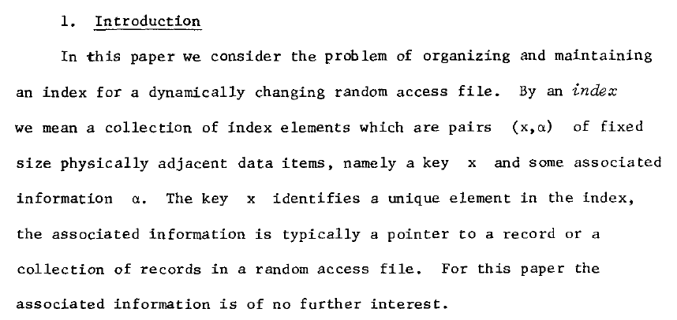

|
B-Tree Library FAQ |
| Boost Home Library Home Reference Tutorial FAQ Portability |
Why are there no unordered B-tree associative containers? It wouldn't be a B-tree or any other kind of tree any more. A B-tree achieves its speed by grouping many ordered elements on nodes, and that minimizes disk access and maximizes the benefit of both hardware and software caches. A hashed approach would have particularly poor performance for traversals, while B-trees amortize the cost of traversal over the number of elements in a node.
What is the difference between a node and a page? In computer science, node is the name for the basic unit used to build data structures. Page is the name for the smallest unit of data for transfers between main memory and any other auxiliary store, such as a hard disk drive. In a B-tree, performance is often optimal if node size is the same as (or a small multiple of) the system's page size.
Where does the idea of an index come from? Bayer and McCreight's original 1970 Boeing Labs paper:

Revised 28 August 2013
© Copyright Beman Dawes, 2013
Distributed under the Boost Software License, Version 1.0. See www.boost.org/LICENSE_1_0.txt